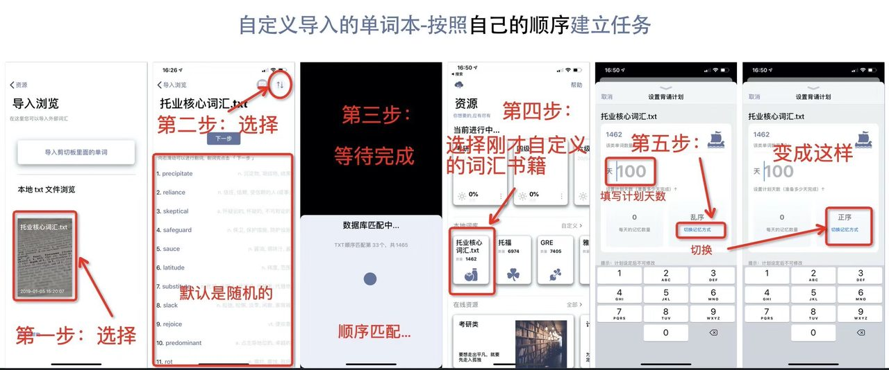

一句话回答：在其他应用里选中 TXT 文件 →「打开方式」选择墨典单词 （Mac 用户可以直接隔空投送到手机），文件会出现在 资源 → 其他导入 → 自定义导入的本地 TXT 列表里； 点进去一路 next 完成匹配，这本词库就会出现在「本地词库」中， 之后和内置词库一样可以建立背诵计划。
三种导入方式
- 从其他应用分享：在文件、邮件、微信、浏览器里选中 TXT， 用「打开方式 / 分享」选择墨典单词。
- Mac 隔空投送：在 Mac 上对 TXT 文件右键「共享 → 隔空投送」发到 iPhone， 接收时选择用墨典单词打开。这是整理好词表后最快的一条路。
- 剪贴板导入：复制一段单词文本，在导入浏览页面点击 「导入剪切板里面的单词」——适合从网页上随手抓一小批词，不必先存成文件。
导入步骤
- 把文件送进 App。用上面任意一种方式即可。
- 打开自定义导入。进入资源页面， 滑到底部的「其他导入」，点击「自定义导入」。
- 在本地 TXT 列表里找到它。 「导入浏览」页面会列出所有导入过的 TXT 单词书，点击你要背的那一本。
- 核对词表并删掉不需要的词。 列表里向右滑动可以删词，删完点「下一步」。 这一步值得花两分钟——把已经掌握的词删掉，能省下后面几周大量的复习量。
- 等待数据库匹配。 App 会把 TXT 里的单词逐个匹配到词典，补上音标、释义和发音。 这个过程会显示进度（例如「顺序匹配第 33 个，共 1465」），词多时需要等一会儿。
- 建立背诵计划。 匹配完成后，这本词库会出现在「本地词库」里，点击即可设置计划。
设置背诵计划：正序还是乱序
自定义词库在建立计划时有两个关键选项：计划天数与记忆方式。
默认是乱序。点击「切换记忆方式」可以改成正序—— 也就是严格按照你 TXT 文件里的原始顺序来背。
| 方式 | 适合 | 理由 |
|---|---|---|
| 乱序（默认） | 大多数情况 | 打乱顺序能切断「它排在某个词后面」这类位置线索，更接近真实使用场景。参见交错练习 |
| 正序 | 教材配套词表、按章节/单元整理的词表、按词频排好序的表 | 顺序本身携带信息时（第 3 单元的词、前 1000 高频词），打乱反而破坏了这个结构 |

计划天数设定后不可修改
设置页面上有一行小字提示：计划设定后不可修改。 所以填天数之前先算一下——用词库总量除以你打算每天背的数量。 例如 1462 个词、每天 30 个，就是 49 天； 填 100 天则相当于每天约 15 个。 拿不准时宁可把天数填长一点：每天少背几个总能坚持， 定得太紧则容易在第二周被复习量压垮。计算方法见 每天背多少单词合适。
TXT 文件怎么准备
最省事的格式是一行一个单词，纯英文，不带序号和释义—— 释义会在匹配阶段由 App 自动补上。
- 用 UTF-8 编码保存，避免乱码；
- 去掉行首的序号、项目符号和多余空格；
- 一行一个词，不要把整句话放进去；
- 导入前先去重——重复的词会占用额外的复习量。
如果你的生词来自 App 内的阅读或取词，可以直接用 「存入本地 txt」导出成 TXT， 再按上面的流程建立一个专属的复习计划。
常见问题
为什么有些词匹配不到释义？
词典里没有收录的专有名词、缩写、拼写错误或变形词可能匹配失败。 建议导入前检查一遍拼写，并尽量使用原形。
导入的词库能离线用吗？
能。匹配完成后数据就存在设备本地，和内置词库一样，飞行模式下照常背。
可以同时导入多本吗？
可以，本地 TXT 列表会保留所有导入过的文件。但建议同一时期只主攻一本—— 多线并行会让每日复习量迅速膨胀。